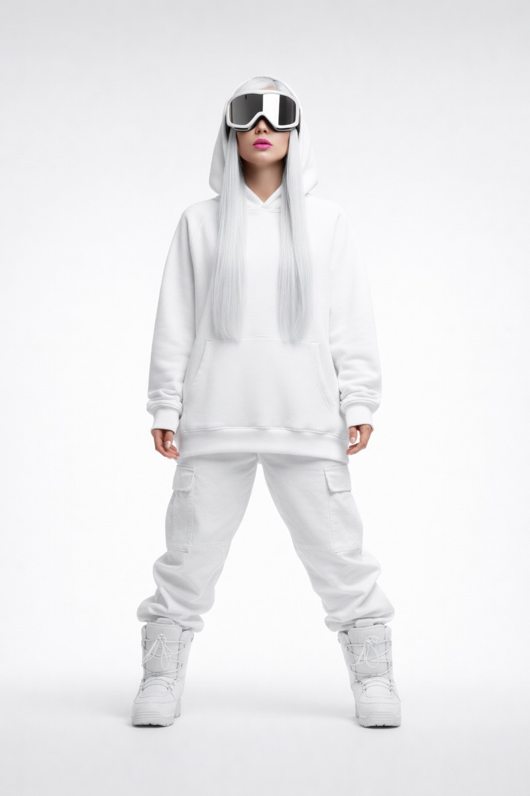
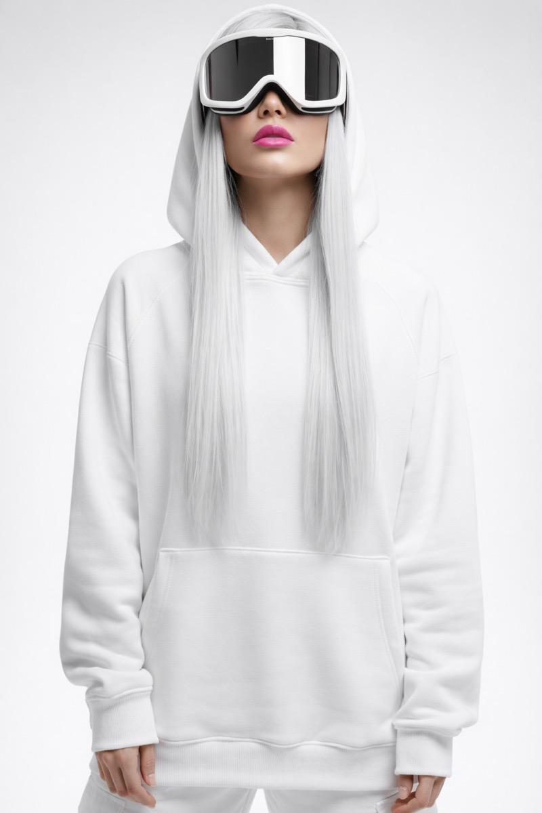
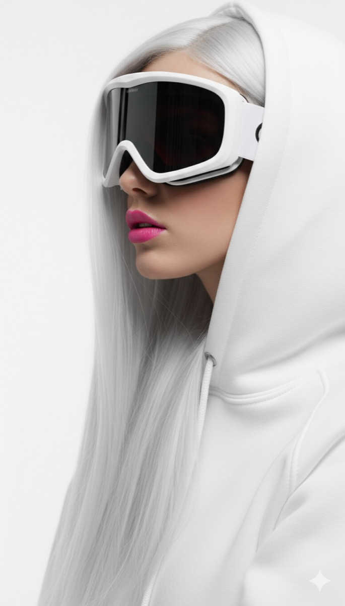
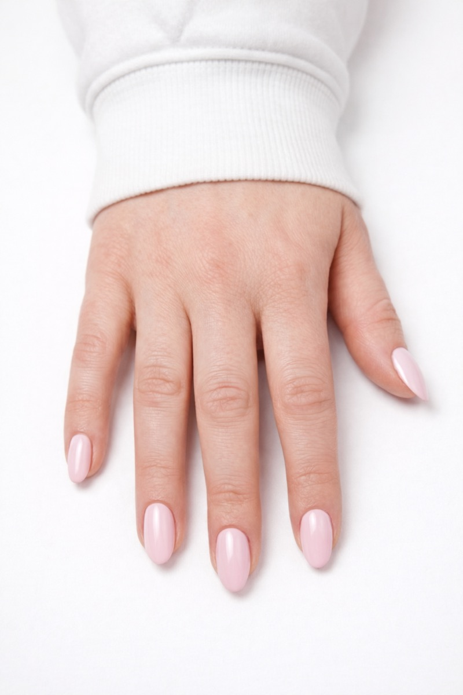
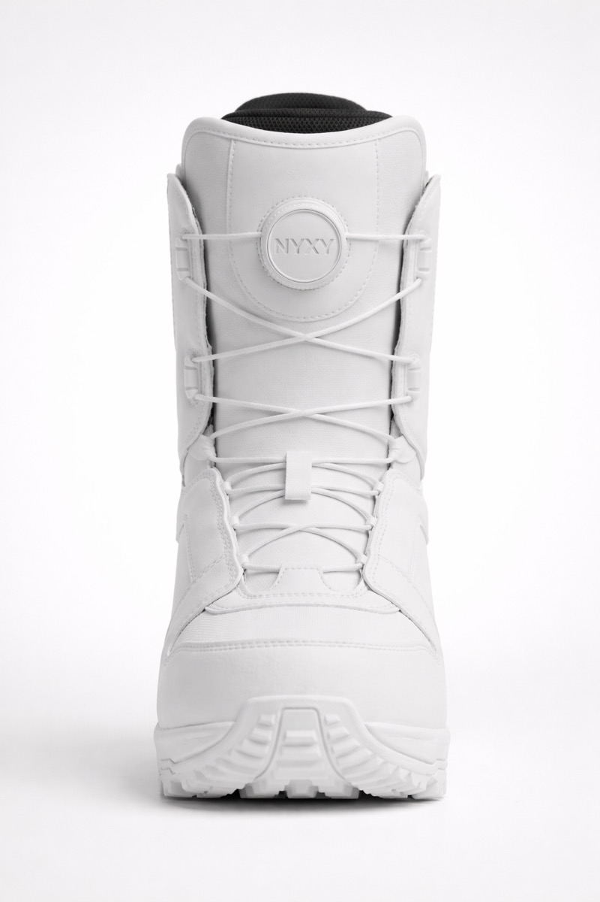
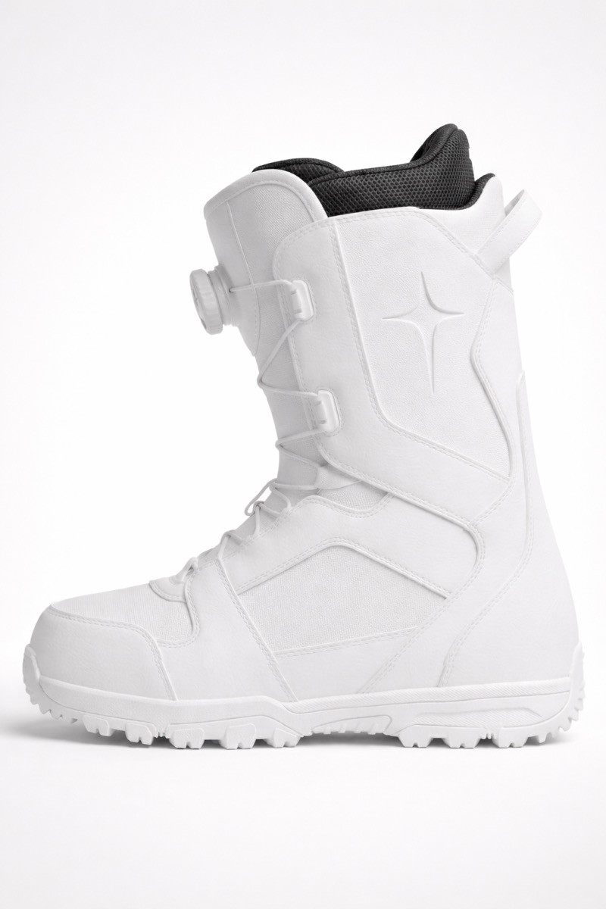
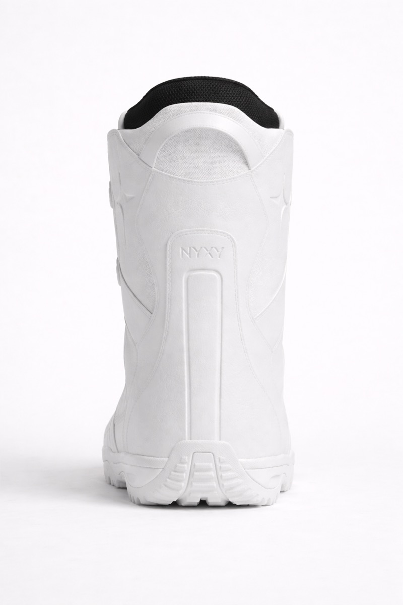
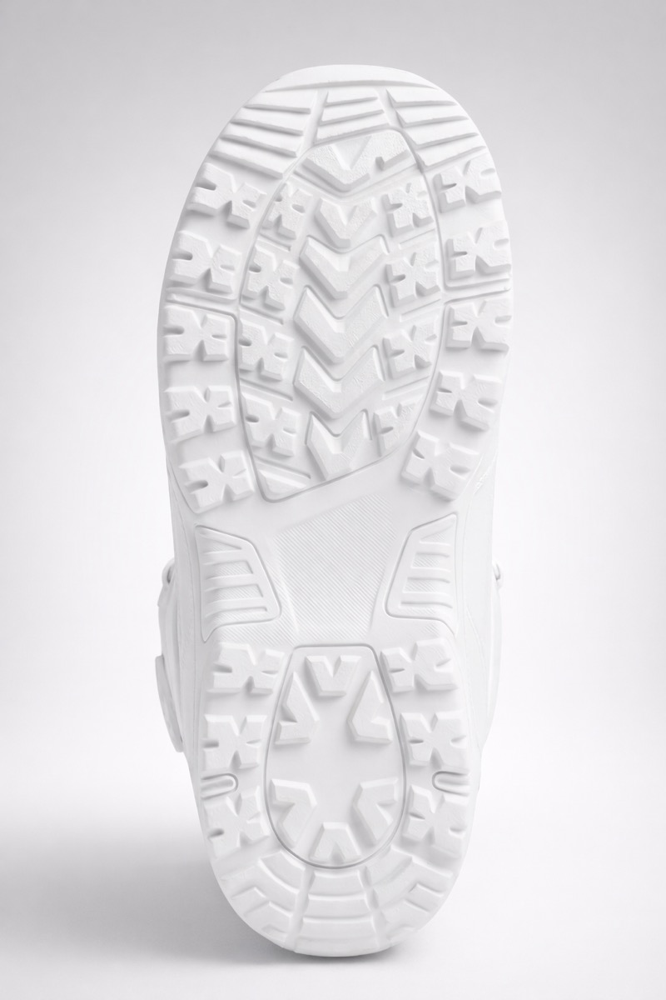

NYXY.
NYXY is a futuristic music producer and DJ, and a character in the LUCA IMMERSIVE world. Her work circles longing, light and shadow, machines, and complicated love.
She is the shadow half of The Field, the mirror to LUCA's light. Inward gravity to his outward motion. She reveals truth by reflecting it back, the way her lenses give nothing away but the room returned.
NYXY means night.
NYXY comes from Nyx (Νύξ), the ancient Greek primordial goddess and personification of the night. Where LUCA is the bringer of light, NYXY is the dark it moves through. The two names are the two halves.
Light's shadow.
NYXY's half of The Field.
She remembers. He searches.
NYXY and LUCA are the yin and yang of The Field, opposite energies that define each other. She travels backward through time leaving traces of him; he moves forward, pulled toward her without knowing why. When their timelines meet in the center, the balance completes.
NYXY
Shadow. Inward gravity. She reaches and she remembers.
LUCA
Light. Outward motion. He searches and he responds.
The whole story is a love story across time.
Meet NYXY.
All white, all signal. The exact inverse of LUCA.
White hood, platinum hair, mirrored goggles, hot pink. A monochrome alpine cyber-streetwear look, designed down to the boots.
All white, all signal.



Every detail, considered.
From the mirrored lens and pink lips down to the platform boots.





She makes her own sound.
Machines, longing, and complicated love, turned into songs.
Electronic Press Kit.
A futuristic music producer and DJ. A machine-lit, melancholic electronic sound.